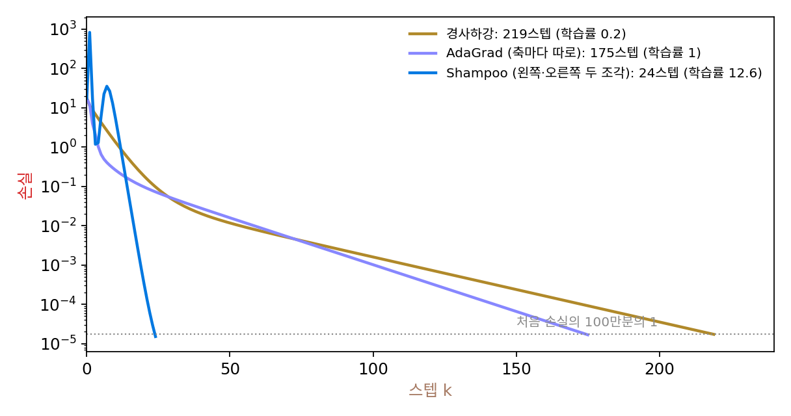

Shampoo: 기울기 행렬 하나로 두 조각을
K-FAC 의 두 조각을 만들려면 층마다 활성값과 역전파 신호를 따로 꺼내 모아야 했고, 층의 종류가 바뀌면 무엇을 조각으로 삼을지부터 다시 정해야 했다. 그런데 옵티마이저가 늘 손에 쥐고 있는 것은 층의 기울기 행렬 하나다. 완전 연결층의 기울기 행렬은 역전파 신호와 활성값의 곱이니, 기울기 행렬의 「행끼리의 짜임」과 「열끼리의 짜임」에 두 조각의 정보가 들어 있을 것이다. 층의 속을 들여다보지 않고, 기울기 행렬만 보고 두 조각을 만들 수는 없을까?
역사: 텐서마다 차원마다 한 조각씩
구글의 비닛 굽타(Vineet Gupta), 토머 코렌(Tomer Koren), 요람 싱어(Yoram Singer)는 2018년 국제 기계학습 학회에 「Shampoo: 텐서 위의 전조건 확률적 최적화」를 냈다. 전조건(preconditioning)은 기울기에 행렬을 곱해 방향마다 늘이고 줄인 뒤 걷는 일이다. 그들은 학습률을 매개변수마다 따로 맞추는 AdaGrad 의 생각을 행렬로 넓혀, 기울기 텐서의 차원마다 행렬을 하나씩 두었다. 가중치가 행렬이면 행 쪽에 하나, 열 쪽에 하나다. 옵티마이저는 모델의 구조를 몰라도 되고 텐서의 모양만 알면 된다. 논문의 구현은 행렬의 거듭제곱을 특잇값 분해로 구했고, 이 계산이 비싸서 전조건 행렬의 거듭제곱근을 20~100걸음에 한 번만 다시 구했다(정확도에는 거의 영향이 없었다고 적었다). 한 변이 1,200쯤을 넘는 차원은 행렬 대신 대각선만 쓰게 했다.
2 × 3 기울기 하나로 손계산
기울기 행렬 G = [[3, 0, 1], [1, 2, 0]](출력 2 × 입력 3)을 하나 받았다고 하자. 행끼리의 짜임 L = GGᵀ = [[10, 3], [3, 5]]는 2 × 2, 열끼리의 짜임 R = GᵀG는 3 × 3이다. 피셔 블록이라면 6 × 6 = 36칸이 들 것을 4 + 9 = 13칸으로 적는다. 걸음마다 받은 기울기로 두 행렬을 쌓아 가고, 기울기의 양쪽에 각각의 −1/4제곱을 곱한다.
이렇게 층의 기울기 행렬로 행 쪽과 열 쪽 전조건 행렬을 하나씩 쌓고, 기울기 양쪽에 그 −1/4제곱을 곱해 걷는 방법을 Shampoo (차원마다 전조건 행렬 하나 / Shampoo)라 한다. 두 행렬을 크로네커 곱으로 이으면 K-FAC 처럼 피셔 블록 크기의 행렬 하나를 어림한 꼴이 된다. 다만 K-FAC 의 조각은 활성값과 역전파 신호를 따로 모아 만들었고, Shampoo 의 조각은 그 둘의 곱인 기울기 행렬만으로 만든다.
위의 G 하나만으로 걸음을 만들어 보면 특이한 일이 생긴다. G의 특잇값(행렬이 축마다 늘이는 배율)은 3.377과 1.896인데, L^(−1/4)GR^(−1/4)의 특잇값은 1과 1이다. 방향은 G를 따르되 모든 방향의 늘임을 고르게 맞춘 행렬이 나온 것이다. 같은 G를 네 번 쌓았다면 특잇값은 모두 0.5, 백 번이면 0.1이다. 쌓을수록 걸음이 작아지는 것은 AdaGrad 와 같다.
이 장치가 실제로 무엇을 하는지, 출력 3 × 입력 5인 행렬 회귀(입력 공분산의 조건수 100, 출력끼리 얽힘, 씨앗 5)에서 보자. 학습률을 방법마다 격자에서 가장 좋은 값으로 골랐을 때, 손실이 처음의 100만분의 1 아래로 내려가기까지 경사하강은 219걸음, 매개변수마다 따로 나누는 AdaGrad 는 175걸음, Shampoo 는 24걸음이다. 축마다 따로 나누는 것으로는 비스듬한 골짜기를 거의 고치지 못하고, 행과 열의 얽힘을 보는 두 행렬이 그것을 고친다.

ML에서: 대회 우승과 그다음
Shampoo 는 한동안 「좋지만 무겁다」는 평을 들었다. 그러다 2024년 MLCommons 의 학습 알고리즘 대회 AlgoPerf 에서 메타의 분산 Shampoo 구현이 하이퍼파라미터를 바깥에서 고르는 부문 1위를 했다. 대회를 정리한 논문(카심베그 외, 2025)에 따르면 기준선(NAdamW)보다 평균 약 28% 빨리 목표 성능에 닿았고, 대각선이 아닌 전조건이 걸리는 실제 시간에서도 Adam 계열을 이겼다. 같은 해 니킬 비아스(Nikhil Vyas) 외의 SOAP 은 Shampoo 의 전조건 행렬의 고유 방향 안에서 Adam 을 돌려, Adam 보다 하이퍼파라미터를 하나(전조건을 다시 구하는 주기)만 더 두고 큰 미니배치의 언어 모델 사전 학습에서 AdamW 보다 걸음 수를 40% 넘게, 실제 시간을 35% 넘게 줄였다고 보고했다.
남은 짐은 −1/4제곱이다. 한 번에 하나 받은 기울기만 쓰면(쌓기를 끄면) 그 결과가 특잇값을 모두 1로 맞춘 행렬이라는 것을 위에서 보았다. 그 행렬을 고윳값 분해 없이 행렬 곱만으로 빠르게 구하는 길이 있다면, 무거운 −1/4제곱을 건너뛸 수 있을 것이다. 그 길이 Muon 이다.
문제 13. 가게 × 달 매출표
가게 A, B, C의 규모가 1 : 2 : 3이고, 넉 달의 계절 배율이 1, 1.5, 2, 1이다. 가게 A의 첫 달 매출은 100만 원이고, 어느 칸이든 매출 = 100만 원 × 가게 규모 × 계절 배율이다. (가) 매출표 3 × 4를 적는 데 필요한 숫자는 몇 개인가? 배율만 적으면 몇 개면 되는가? (나) 가게 10곳 × 12달이면? 「두 칸이 함께 오르내리는 정도」를 칸 쌍마다 하나씩 적는 표와, 가게 쌍 표 + 달 쌍 표의 칸 수를 비교하면? (다) 가게 C의 넷째 달만 행사로 900만 원이 되었다. 가로 합 × 세로 합 ÷ 전체 합으로 표를 다시 만들면 그 칸은 얼마로 나오는가?

(가) 표는 12칸인데, 배율로 적으면 가게 셋 + 달 넷 = 7개면 돼요. (나)는 120칸 대신 22개. 칸 쌍마다 적는 표는 120² = 14,400칸, 가게 쌍 표와 달 쌍 표는 10² + 12² = 244칸이요.

행 쪽 하나, 열 쪽 하나씩 두면 곱셈으로 늘어나던 칸이 덧셈으로 줄어드는 거네.

(다)처럼 표가 「가게 × 달」 꼴에서 벗어나면요?

다시 만든 표에서 그 칸이 692.3만 원이에요. 실제 900만 원보다 작고, 대신 같은 행과 열의 다른 칸들이 원래보다 커졌어요. 행사 하나가 가게 C 전체와 넷째 달 전체에 번져 버렸네요.

행 배율과 열 배율로는 「이 가게의 이 달만」 같은 특별한 칸을 적을 수 없으니까. Shampoo 의 두 행렬도 같은 값을 치르겠지. 행끼리, 열끼리의 짜임은 잡지만 특정 행과 특정 열이 엮인 짜임은 두 조각의 곱으로만 적어.

반별 평균 × 과목별 평균으로 성적을 어림하면, 우리 반만 유독 수학을 못 보는 건 안 보이는 거랑 같네요.
문제 14. 기울기를 10배 하면
본문의 2 × 3 기울기 행렬 G = [[3, 0, 1], [1, 2, 0]] 하나로(쌓기 없이) 걸음을 만든다. (가) G를 10배 하면 Shampoo 의 걸음 L^(−1/4)GR^(−1/4)는 어떻게 바뀌는가? (나) −1/4 대신 −1/2제곱을 양쪽에 곱하면, G와 10G에서 걸음의 특잇값은 각각 얼마인가? (다) Shampoo 가 −1/4제곱을 고른 까닭을 말해 보라.
자연 기울기는 곡률의 역을 곱했으니까 −1이 맞을 텐데, 양쪽으로 나누면 −1/2씩 곱하는 게 자연스럽지 않아요? (나)부터 해 볼게요. −1/2제곱이면 특잇값이 0.527, 0.296이고, 10배 하면 0.0527, 0.0296이에요. 기울기가 10배인데 걸음은 10분의 1이 됐어요.
G를 c배 하면 L과 R은 몇 배가 되죠? 거기에 −1/2제곱을 하면요?

L = GGᵀ라서 c²배, −1/2제곱이면 1/c배요. 양쪽에서 1/c씩, 가운데 G가 c배니까 모두 1/c배. 기울기가 크면 걸음이 작아지는 이상한 옵티마이저네요.
−1/4제곱이면 양쪽에서 1/√c씩, 가운데 c배라 그대로야. (가)는 계산해 보면 특잇값이 1, 1로 10배 해도 1, 1. 기울기의 크기에 걸음이 휘둘리지 않아.

그래요. L과 R은 둘 다 기울기의 제곱만큼 자라니까, 둘을 합쳐 「기울기 제곱의 제곱근」으로 나누려면 각자 4제곱근씩 맡아야 해요. 매개변수마다 기울기를 √(기울기 제곱의 합)으로 나누는 AdaGrad 와 같은 셈이죠.

곡률로 나누는 뉴턴법이 −1이었던 건 피셔나 헤시안이 기울기의 1제곱이 아니라 따로 정해진 행렬이기 때문이고, Shampoo 의 L, R은 기울기로 만든 행렬이라 지수를 맞춰야 하는 거네요. 단위를 맞추는 차원 분석이에요.

용돈을 「지난달 쓴 돈의 제곱」에 반비례하게 주면 많이 쓴 달은 다음 달에 굶는 거랑 같네요. 제곱으로 쌓았으면 제곱근으로 풀어야죠.
문제 15. 4096 × 11008 층
큰 언어 모델에서 흔한 모양인 4096 × 11008 가중치 행렬 하나를 32비트로 학습한다. (가) 가중치, Adam 의 두 버퍼, Shampoo 의 두 전조건 행렬 L(4096 × 4096)과 R(11008 × 11008)에 드는 메모리를 구하라. 이 층의 피셔 블록은? (나) 11008 × 11008 행렬의 고윳값 분해가 대략 11008³번 연산이라면 4096 쪽보다 몇 배 무거운가? (다) Shampoo 원 논문 구현이 한 변이 1,200쯤 넘으면 대각선으로 바꾼 까닭과, 전조건을 20~100걸음에 한 번만 다시 구한 까닭은?
가중치는 4,509만 칸, 180 MB예요. Adam 은 그 두 배 361 MB. Shampoo 는 L이 1,678만 칸, R이 1억 2,118만 칸, 합 552 MB로 가중치의 3.06배요. 피셔 블록은 2 × 10¹⁵칸, 8페타바이트니까 552 MB면 싸네요.
메모리는 그래요. 걸음마다 R^(−1/4)을 구한다면요?

11008³ = 1.33 × 10¹²번, 4096³ = 6.9 × 10¹⁰번이라 19배쯤 무거워요. 층이 수십 개니까 걸음마다 하면 학습이 그 계산에 묶이겠어요.
메모리는 한 변의 제곱, 계산은 세제곱으로 자라. 그래서 1,200을 넘는 변은 대각선으로 바꾸고, 다시 구하는 일은 몇십 걸음에 한 번으로 줄인 거야. 그동안은 묵은 −1/4제곱을 그대로 쓰고.

쌓기를 끄면 걸음은 특잇값이 모두 1인 행렬이 된다고 했죠. 그 행렬을 구하는 데 고윳값 분해가 꼭 필요할까요?

특잇값만 1로 바꾸면 되니까… 행렬 곱 몇 번으로 특잇값을 1 쪽으로 밀어붙이는 반복이 있다면 세제곱의 분해 없이도 될 것 같아요.
전교 석차를 매번 처음부터 다시 정렬하지 않고, 시험 끝날 때만 한 번 하는 거랑 같네요. 무거운 계산은 가끔, 가벼운 계산은 매번.